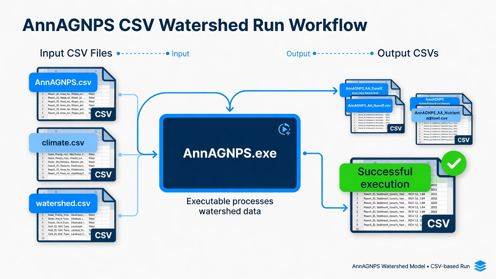

AnnAGNPS
CSV watershed run. Copy AnnAGNPS.exe into the CSV input folder and execute it there.

1. Get the software
Download the complete AGNPS package from USDA-ARS (current software id 524). The lab install is C:\Grok\Models\installs\AnnAGNPS.
2. Stand in the input folder
cd C:\Grok\Models\installs\AnnAGNPS\test_run\AGNPS_Watershed_Studies\OH_AGNPS_Example_Watershed\4_Editor_DataSets\CSV_Input_Files copy C:\Grok\Models\installs\AnnAGNPS\AGNPS\PLModel\Execute\AnnAGNPS.exe .
3. Run
.\AnnAGNPS.exe
4. Confirm success
The console should print Successful execution. Then open AnnAGNPS_AA_Sediment_load_(unit-area).csv and find reach 101 Subtotal sediment load.